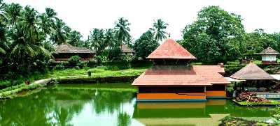

KASARAGOD
The northernmost district of Kerala, Kasaragod is renowned for its hills, forts and water bodies. The coir and handloom industry here are extremely famous around the world. The place is also popular for its ancient temples and rich biodiversity. It is an important border district as well that regulates trade with a lot of neighbouring States. Legends regarding the district greet you at every turn on a visit here. A trip here is incomplete without visiting Bekal Fort, the most majestic and well maintained fort in South India.
TOURIST ATTRACTIONS

Ranipuram
The gentle hills of Ranipuram in Kerala are famous for its trekking trail. Situated at the height of about 750 meters above sea level, this destination has thick forest vegetation and lush green grasslands. The whole place is proposed inside the Ranipuram Wildlife Sanctuary which merges with Talakaveri Wildlife Sanctuary of Karnataka.

Ananthapura Lake Temple
The temple is situated in Kasargod district of Kerala and is connected to Sri Anantha Padmanabha Temple ,Trivandrum. It's a lovely temple surrounded by a lake. It is heard by the local people that there is a crocodile in this lake which protects the temple. The tourists have to remove their shirt before they enter the temple.

Bekal Fort
Bekal Fort is a historic tourist attraction built in the 17th century located in the Kasargod district of Kerala. It is located on the National Highway around 16 kilometers away from the town. Bordered by an immaculate beach, it is among the best-preserved forts in Kerala. Visitors can enjoy marvelous views of the Arabian Sea from the observation towers of this largest fort in the state. Bekal Fort has an attractive circular structure made up of laterite which rises almost 130 feet above sea level. It stands on a headland of around 35 acres that runs into the Arabian Sea.